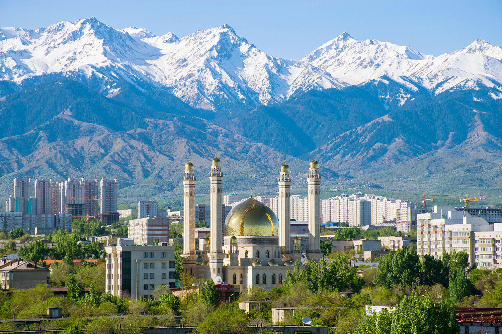
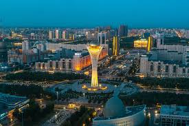

1. Almaty
A lively cultural and economic hub surrounded by majestic mountains. Enjoy skiing, museums, and vibrant cafes in Kazakhstan’s former capital.

2. Charyn Canyon
Often called the "Mini Grand Canyon," it boasts striking rock formations and scenic hiking trails. A perfect adventure spot.

3. Astana (Nur-Sultan)
Kazakhstan’s modern capital city filled with futuristic architecture like the Bayterek Tower and Khan Shatyr shopping center.

4. Lake Kaindy
Famous for its submerged forest and crystal-blue waters. A surreal and serene spot for photographers and nature lovers.

5. Altai Mountains
A remote region with dramatic landscapes, ancient rock carvings, and rich biodiversity. Ideal for hiking and eco-tourism.